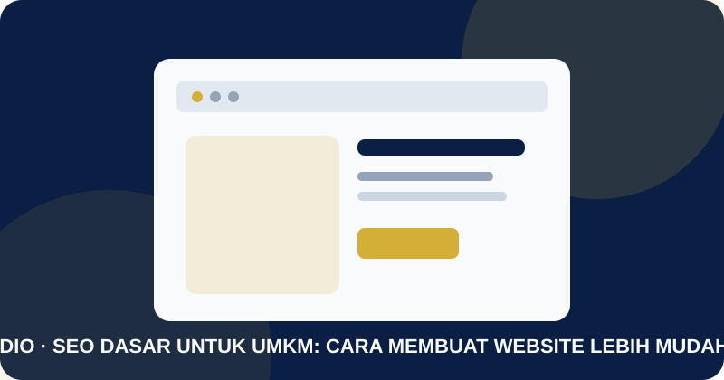

SEO Dasar untuk UMKM: Cara Membuat Website Lebih Mudah Ditemukan

Memiliki website belum tentu membuat usaha langsung muncul di halaman pertama Google. Mesin pencari perlu memahami isi halaman, sementara pengunjung perlu menemukan jawaban yang benar-benar sesuai dengan kebutuhannya. SEO atau optimasi mesin pencari adalah proses membantu halaman ditemukan melalui pencarian yang relevan, bukan jalan pintas untuk menjamin peringkat tertentu.
Mulai dari bahasa pelanggan
Tuliskan pertanyaan yang sering diajukan calon pembeli. Contohnya: “jasa katering harian di Semarang”, “harga cetak kemasan makanan”, atau “servis AC panggilan”. Frasa seperti ini memberi gambaran tentang kebutuhan dan lokasi yang dicari pelanggan.
Pilih satu topik utama untuk setiap halaman. Hindari memasukkan terlalu banyak kata kunci yang tidak berhubungan. Gunakan istilah secara alami di judul, heading, dan isi halaman.
Rapikan elemen setiap halaman
Buat judul halaman yang spesifik dan mudah dipahami. Tulis deskripsi singkat yang merangkum manfaat halaman. Gunakan satu heading utama yang jelas, lalu susun subjudul secara logis. Buat alamat halaman ringkas dan mudah dibaca.
Buat konten yang menjawab pertanyaan
Jelaskan produk atau layanan dengan detail yang membantu: manfaat, spesifikasi, area layanan, cara pemesanan, estimasi proses, dan pertanyaan umum. Hindari menyalin deskripsi dari kompetitor. Foto asli dan contoh pekerjaan yang relevan dapat membantu pengunjung memahami penawaran.
Jangan lupakan SEO lokal dan pengalaman mobile
Jika bisnis melayani wilayah tertentu, tampilkan nama area layanan, alamat atau cakupan wilayah yang akurat, nomor kontak, serta jam operasional yang benar. Pastikan informasi tersebut konsisten di website dan profil bisnis yang dikelola.
Periksa website di ponsel. Teks harus terbaca, tombol mudah disentuh, halaman tidak bergeser ke samping, dan informasi penting tidak tersembunyi. Pengalaman yang baik membantu pengunjung menggunakan website dengan nyaman.
Ukur dan perbaiki secara bertahap
Gunakan Google Search Console untuk memantau bagaimana halaman ditemukan, kueri yang memunculkan website, dan masalah pengindeksan. Periksa data secara berkala lalu perbaiki halaman yang belum menjawab kebutuhan pencari.
Kesimpulan
SEO adalah pekerjaan berkelanjutan. Mulailah dengan halaman yang paling penting, isi informasi yang akurat, dan tingkatkan kualitas berdasarkan pertanyaan pelanggan serta data pencarian.